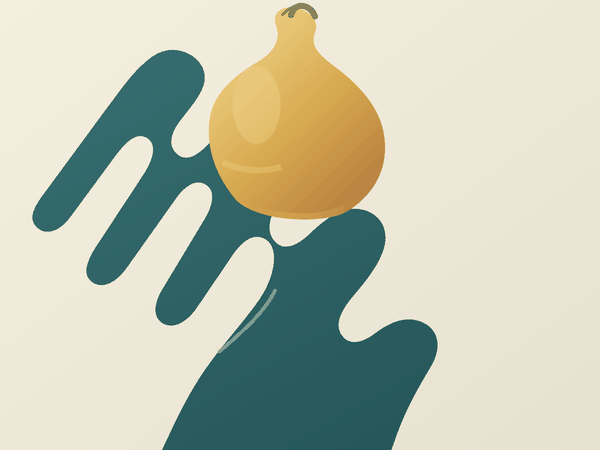

Vyt Aitken | moving image | 15 October 2026

The pear waits above the hand, settles, then leaves. A faint echo of its color stays where its weight rested.
See the two contact states side by side.
Back to the studio.